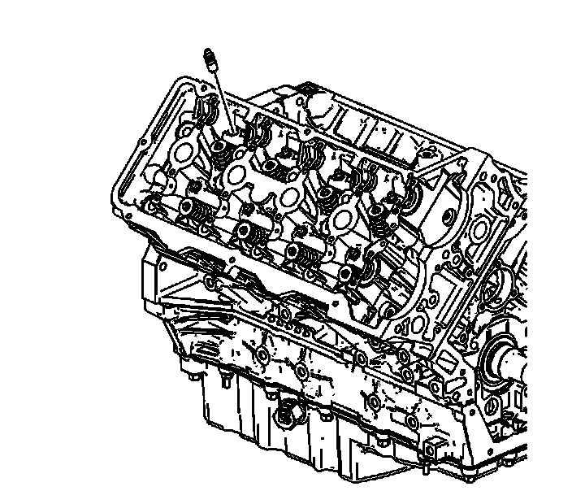

39. Valve Lifter Removal - Right Side
Valve Lifter Removal - Right Side

Notice: Refer to Valve Lifter Priming Notice (Valve Lifter Priming Notice) .
Important: Ensure each camshaft follower remains matched to the original stationary hydraulic lash adjuster (SHLAs) and original location the components were assembled in.
1. Remove the stationary hydraulic lash adjuster (SHLAs) from the right cylinder head lifter bores.
2. Store the camshafts, followers and SHLAs in a clean, secure location.